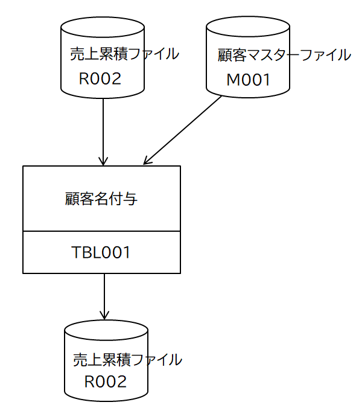

<!-- -->
<DOCTYPE HTML>
<html id="mainhtml">
<head>
  <meta http-equiv="Content-Type" content="text/html; charset=utf-8">
  <title>処理パターン(３) テーブル展開</title>
  <link rel="stylesheet" type="text/css" href="/lib/document.css">
</head>
<body id="mainbody">
<!-- ↓↓↓↓↓↓↓↓↓↓↓ -->
<script type="text/javascript" src="/lib/funcs5.js"></script>
<!-- ↑↑↑↑↑↑↑↑↑↑ -->
<div id="content">
<h2 class="lm70 tm20 bm0">
処理パターン(３) テーブル展開
</h2>
<div class="lm70 tm5 rm60">
テーブルは単純な仕組みなので、ソースコードを見てもらえば容易に理解できると思う。
</div>

<h3 class="lm70 tm10 bm0 rm60">
機能仕様
</h3>
<div class="lm70 tm5 rm60">
顧客マスターファイルをテーブルに展開する。トラザクションレコードの顧客コードから顧客マスターテーブルを検索し、あれば顧客名称をトランザクションレコードに追加する。
</div>
<h3 class="lm70 tm20 bm0 rm60">
入出力構成図
</h3>
<!-- 画像 -->
<a href="/lib/HTMLofImage.html?filename=/cobol/4/cob04_01.png&title=cob04_01&width=500" target="_new">
</a>

<h3 class="lm70 tm20 bm0 rm60">
ソースコード
</h3>
<!--ソースコードリンク-->
<div class="lm100 tm5 rm60">
<a href="/lib/HTMLofText.html?filename=/cobol/4/source/TBL001.txt&title=TBL001.cbl" target="_new">TBL001.cbl</a>
</div>
<h3 class="lm70 tm20 bm0 rm60">
入出力ファイルの内容
</h3>
<div class="lm100 tm5 rm60">
入力・売り上げ累積ファイル
</div>
<!--ソースコード-->
<iframe class="lm100 tm0" src="/lib/HTMLofText.html?filename=/cobol/4/file1.txt" width="550" height="160"></iframe>
<div class="lm100 tm5 rm60">
入力・顧客マスターファイル
</div>
<!--ソースコード-->
<iframe class="lm100 tm0" src="/lib/HTMLofText.html?filename=/cobol/4/file2.txt" width="550" height="170"></iframe>
<div class="lm100 tm5 rm60">
出力・売り上げ累積ファイル
</div>
<!--ソースコード-->
<iframe class="lm100 tm0" src="/lib/HTMLofText.html?filename=/cobol/4/file3.txt" width="550" height="170"></iframe>
<!-- 空白行 -->
<div class="bp40"></div>
<!----------------------------------------------->
</div><!-- end of content -->
<footer id="mainfooter">
<div class="tp10 bm10 bp10 textright"> <span class="rm500 font80"><a href="/lib/index5.html">メニューに戻る</a></span><span class="rm20 font80"><a href="#mainheader">TOPに戻る</a></span></div>
</footer>
<script type="text/javascript" src="/lib/access/access2.js"></script>
</body>
</html>
